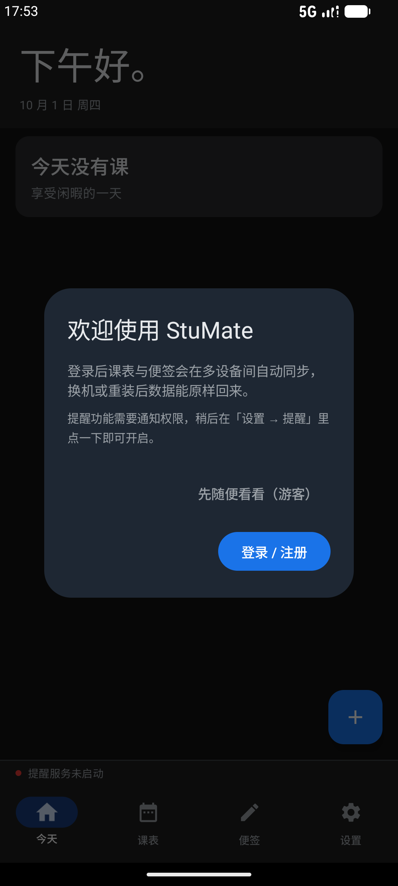
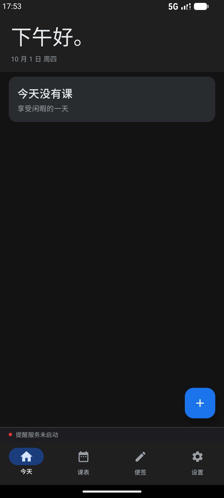
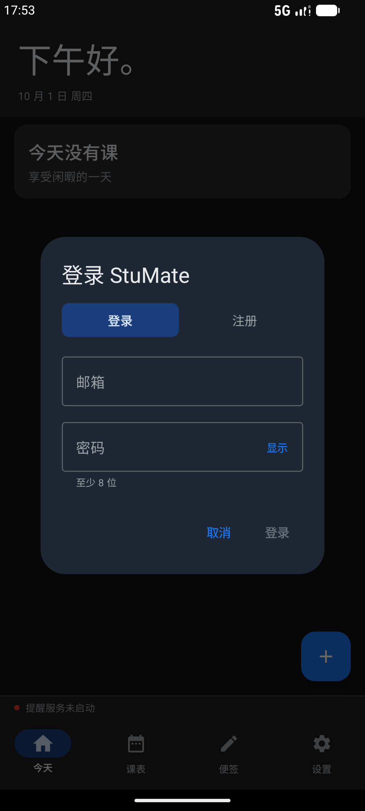
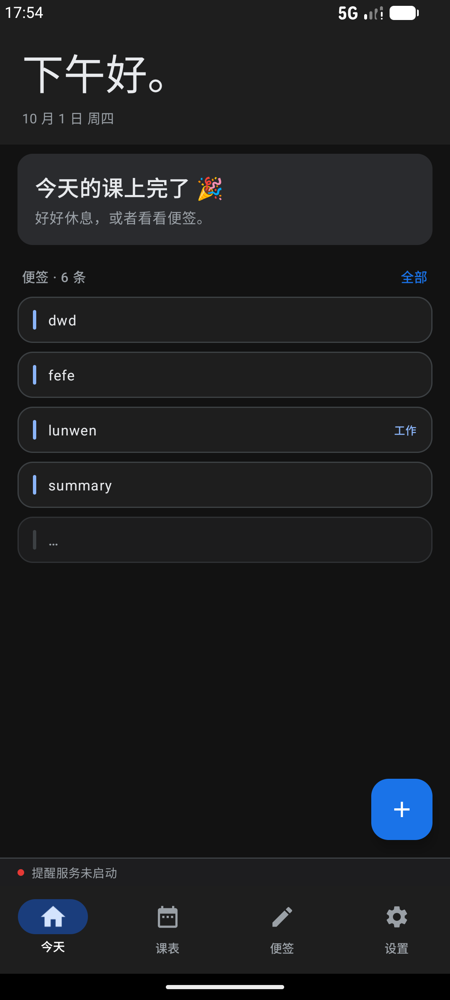

移动端（Jetpack Compose M3 / Room 2.6.1 / Kotlin 1.9.20），Medium_Phone 模拟器真机验收。
① 每次主动登录都强制把本地对齐到「最早登录那台设备」的配置，被覆盖的那份先备份；
② 首次启动推荐登录 / 注册，但保留游客选项 —— 无边框灰字。


first_run=false 已落盘，下次启动不再问。

pm clear 过）。登录后用 run-as 直接读应用私有目录，三个文件互相印证：
shared_prefs/stumate_account.xml → access/refresh 令牌非空，user id 17 shared_prefs/stumate_sync.xml → <int name="cursor" value="83" /> （不是 0，说明全量拉过并推进了游标） files/StuMate-preinit-backup-*.json → 被覆盖配置的备份（本次本地为空，故 count 为 0）
| 证据 | 实测值 | 说明 |
|---|---|---|
stumate_account.xml |
access_token / refresh_token 均有值 | 登录真的落盘了，不是界面上的假象 |
stumate_sync.xml |
cursor = 83 | 若走了旧的「先 push 再 pull」或压根没拉，这里会是 0 或很小的值 |
StuMate-preinit-backup-20261001-175425.json |
已生成 | 「备份被覆盖的配置」这条需求的可验证产物 |
| 项 | 结果 |
|---|---|
编译 compileDebugKotlin | BUILD SUCCESSFUL |
单元测试 testDebugUnitTest | 153 / 153 通过，0 失败 |
assembleDebug | BUILD SUCCESSFUL |
| 首启引导：游客路径 | 对话框消失，主界面可用，first_run=false 落盘 |
| 首启引导：登录路径 | 拉起 AuthDialog，默认「登录」标签页 |
| 登录强制对齐（端到端） | 令牌落盘 + 游标推进到 83 + 备份文件生成 + 界面拉到 6 条便签 |
MainActivity.kt —— 首启引导改版：登录 / 注册为主，游客为无边框灰字；登录成功回调里触发对齐data/sync/SyncEngine.kt —— syncAfterLogin()、runSync(forceAlign) 第 0 步、launchSyncDone 守卫data/sync/AccountSession.kt —— loginEpoch / markFreshLogin()data/sync/AppViewModel.kt —— onSignInChanged() 用 loginEpoch 区分启动恢复 / 主动登录ui/AccountSyncSection.kt —— AuthDialog / MODE_LOGIN / MODE_REGISTER 由 private 改 internal（跨文件复用）
新增的启动去重守卫：MainActivity 没有声明 android:configChanges，
旋转屏幕会重建 Activity → onCreate 再跑一遍 bootstrap() → 多同步一次。
多跑一次本身无害（服务端 replace_local 已改成一次性），但纯属浪费一次往返，
所以 syncOnStart() 也加了与桌面端同名的 launchSyncDone 幂等守卫。
手动同步走 syncNow()，不受影响。